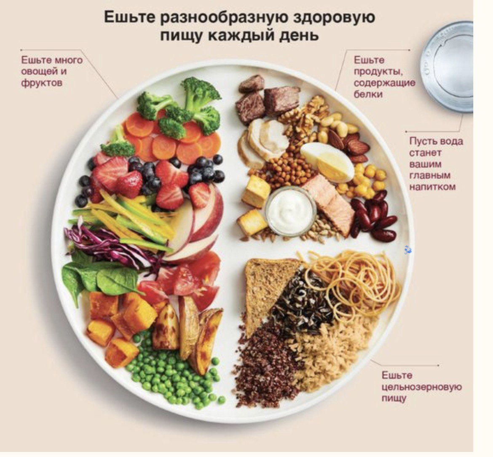

Каждый приём пищи (фото + скрин из FatSecret) сразу присылайте мне
все приемы пищи, вносите в приложение FatSecret
Буду лично контролировать и корректировать каждый приём пищи и суточный рацион
Писать в Telegram с 10:00 до 20:00
суббота, воскресенье

Любая рыба — треска, кета, горбуша, скумбрия (сырая, не копчённая). Идеальный источник омега3 — палтус, дорада, сибас. Строго ограничено ( из-за высокого накопления тяжелых металлов ) — семга, тунец, пангасиус (лучше исключить). В список по желанию добавляете морепродукты: креветки, кальмар, мидии, и тд. Малосольная Рыба ( лучше выбирайте дикой природы: кета, горбуша, кижуч) — идеально разнообразит завтрак.
Мясо — идейка, утка, кролик, нежирная телятина, курица (свободного выгула, домашняя).
Субпродукты — идеальный источник витаминов A, D, E и группы B (печень индейки или кролика).
Яйца — перепелиные, цесарки, куриные (только фермерские, свободного выгула).
Овощи — разрешены все и побольше, картофель можно только с резидентным крахмалом (картофель отварить и охлодить в холодильнике) так лучше для микробиома кишечника. Все виды капуст (цветная, брюссельская, брокколи, белокочанная, краснокочанная, айсберг). Перец болгарский, огурцы, помидоры, баклажаны, морковь (но не тушёная), кабачок, лук. Множество зелени (петрушка, укроп, кинза, шпинат, руккола и тд).
Каши — (пшено, киноа, гречневую, макароны без глютена, иногда цельнозерновой хлеб). Все каши в обед. Цельнозерновой хлеб до 2х раз в неделю на завтрак с белком! Хлебцы без глютена (Dr.korner — прованские травы и гречневые, рисовые, кукурузные (кукурузу в составе продукта- можно, цельную- нельзя))..
Молочные продукты — допустимо в ограниченном количестве (пару раз в неделю) сыр. Отдавайте предпочтение козьему или овечьему сыру. Остальные под запретом. Молочные продукты приводят к процессам гликации в организме (процесс старения на клеточном уровне). Так же в молочных продуктах содержится белок каземорфин, который организм не в состоянии переваривать.
Фрукты. Все фрукты употребляем после основного приёма пищи. В перекус нельзя — это табу! Рекомендуемые: ягоды (малина, клубника, голубика, вишня, чёрная смородина, клюква, брусника), грейпфрут, яблоки зеленые. До 1 порции в день.Кокосовое молоко, сливки — в нем можно тушить продукты. (В супермаркете в отделе тайской кухни. Обязательно смотрите состав, чтоб там кроме кокоса и воды ничего не было)
Орехи (желательно заранеее вымоченные. Особенно тем, кто принимает препараты железа). Кому трудно дается 3х разовое питание можете делать перекус- 20-30 гр орехов. Как вымачивать орехи: на ночь ставите в воду, на утро промываете и высушиваете на низкой температуре в духовке.
Масла — оливковое, кунжутное, авокадо, грецкого ореха, масло ГХИ, сливочное масло (хорошего качества), масло виноградной косточки, кокосовое масло. Жарить можно на — кокосовом, ГХИ (топленное), утином или гусином жиру.
3 месяца
Мы проанализируем список продуктов, которые нужно исключить, и научимся заменять привычные продукты другими.
Помните: первые два-три
дня – самые трудные. Потом будет легче, по мере улучшения самочувствия ваша мотивация укрепится,
и появится больше сил и энергии, чтобы придерживаться выбранного курса.
Сахар
Глютен
Молочные продукты
Соя
Кукуруза
Кофе
Травяной чай (любой)
Какао на кокосовых сливках
Цикорий
Гречишный чай
С этого дня пора прекращать есть сладости и продукты произведенные из белой муки.
Должна предупредить: если вы привыкли потреблять много сахара или в каждый прием пищи включали хлеб, макароны, картофель
или белый рис, вас может подстерегать «синдром отмены».
Этот термин кажется странным применительно к еде,
но для некоторых людей сахар
на самом деле является наркотиком, они зависимы от него. Если это ваш случай,
у вас может возникнуть сильная реакция в ответ
на исключение сахара из рациона.
У некоторых моих пациентов сильно болела голова и скакало настроение в первые несколько дней после отказа от сахара. Не волнуйтесь, все эти реакции со временем пройдут (обычно в течение одного-трех дней), и вы почувствуете себя здоровееи стабильнее в эмоциональном
и энергетическом плане, чем прежде.
Хлеб, кексы, торты, печенье, макаронные изделия и изделия
из дробленого зерна – все это явные источники глютена,
но он присутствует и в огромном количестве других продуктов скрытой форме.
Поэтому необходимо внимательно читать этикетки на упаковке
и проверять список ингредиентов
на наличие пшеницы, ячменя, камута, ржи или спельты. Например, знаете ли вы, что в соевом соусе содержится пшеница?
Киноа, пшено, гречка и рис не содержат глютена. Радует,
что сейчас можно найти хлеб, макаронные изделия, и даже печенье, произведенные из этих зерновых. На упаковках многих продуктов есть надпись:
«Без глютена».
Продукты без глютена
не обязательно полезны для здоровья. Например, печенье без глютена содержит сахар, поэтому всегда смотрите состав продуктов.
У всех молочных продуктов высокий инсулиновый индекс — они стимулируют выброс инсулина, повышают выработку инсулинового фактора роста. При его повышении ускоряются процессы старения.
Переносимость лактозы. (типы переносимости: хорошая переносимость, вариабельная лактазная недостаточность, полная непереносимость)
К запрещенным продуктам относятся любые продукты
из коровьего молока: йогурт, сыр, молоко, кефир.
Альтернатива молочным продуктам — миндальное, рисовое, конопляное
и кокосовое молоко.
Из этих заменителей молока производят также йогурт, кефир
и сыр. Я предпочитаю кокосовое молоко, так как оно содержит жир, очень полезный для здоровья кишечника и мозга.
Нужно исключить цельную кукурузу, как в початках, так и замороженную, консервированную, а также попкорн.
Следует внимательно читать этикетки. Ищите в списке ингредиентов кукурузный крахмал, кукурузный сироп, твердые вещества кукурузного сиропа, кукурузную муку и кукурузный сироп с высоким содержанием фруктозы, то есть все, где есть слово «кукуруза».
Соя попала в наш список, так как у многих она вызывает расстройство пищеварения и воспаление, с чем я постоянно сталкиваюсь в своей практике.
ОВОЩИ РАЗРЕШЕННЫЕ:
-Все виды листовых овощей/салатов-Все виды зелени и проростков (при ГЭБР запрещена мята!)
-Все виды капусты и крестоцветных
-Все виды кабачков- сырые и полусырые
-Все виды грибов
-Все некрахмалистые овощи (помимо вышеперечисленных)
Также сюда входят:
-Артишок
-Спаржа
-Стручковая фасоль
-Авокадо
-Бамбуковые побеги
-Сельдерей и стебли и корень
-Пастернак
-Огурец
-Окра
-Ревень
Если овощи крахмалистые (картофель, батат, топинамбур, морковь, свёкла, горошек, кукуруза и др.) то они должны потребляться сырыми и полусырыми!!!
ОВОЩИ ЛИМИТИРОВАННЫЕ:
-Крахмалистые (картофель, батат, топинамбур, морковь, свёкла, горошек,кабачки, тыква и др.) то они должны потребляться полутвёрдом/полуготовом виде!!!
-Пасленовые овощи: все виды перца, томаты, баклажаны считаются высокореактивной/аллергищируещей пищей и в общем не рекомендуются в здоровой диете!! Их употребление допускается при условии ротационного принципа (один тип продукта не чаще, чем раз в 4 дня!) и условий хорошей индивидуальной переносимости!
-Оливки и другие «соленья»
ОВОЩИ ЗАПРЕЩЕННЫЕ:
-Крахмалистые (картофель, морковь, свёкла, горошек,кабачки, тыква и др.)
в разваренном и/или пюреобразном виде!!!
-Чеснок для ГЭБР!!
ФРУКТЫ РАЗРЕШЕННЫЕ:
-Натуральные ягоды (черника, клюква, брусника не более 100 грамм за раз)
-Твердые несладкие яблоки
-Твёрдые/зелёные груши
-Лимон и лайм
ФРУКТЫ ЛИМИТИРОВАННЫЕ:
-Допускаются только при условии потребления после основной еды и не более одной порции за раз и не более двух позиций в день
-Органические/натуральные сухофрукты из яблок, груш, абрикосов, чернослива при условии потребления после основной еды в количестве не более 3-5 штук
-Арбуз до 300 грамм
-Клубника, малина, ежевика до 50 грамм
-Персики, нектарины, сливы, абрикосы до 50 грамм
-Незеленые/полусладкие яблоки
-Твёрдые/зелёные бананы
-Твёрдые/зелёные груши
-Апельсин-не более одного
-Грейпфрут-не более одного
ФРУКТЫ ЗАПРЕЩЕННЫЕ:
-Любые фруктовые соки, включая свежевыжатые!
-Консервированные фрукты
-Любые сладкие сухофрукты (инжир, манго, папайя и др.) или сухофрукты из разрешённого перечня в количестве, превышающем рекомендованное
-Натуральные ягоды из разрешённого перечня свыше 100 грамм за раз
-Черешня
-Клубника свыше 50 грамм
-Спелые бананы
-Дыня
-Арбуз свыше 300 грамм
-Виноград
-Груша
-Манго
-Папайя
-Инжир
-Ананас
-Персики, нектарины, сливы, абрикосы свыше 50 грамм
МАСЛА РАЗРЕШЕННЫЕ:
-Все растительные масла, кроме оговорённых в перечне
-Запрещённых при 4-х условиях должны быть нерафинированными/extra virgin
-Должны быть свежими без признаков прогоркания и хранить в холодильнике!!
-Должны употребляться сырыми/ненагретыми (относительное исключение- рафинированные масла кокоса, оливы, макадамии)
МАСЛА ЛИМИТИРОВАННЫЕ:
-Подсолнечное нерафинированное
-Сливочное, включая масло гхи- топленное сливочное
МАСЛА ЗАПРЕЩЕННЫЕ:
-Арахисовое
-Подсолнечное рафинированное
-Кукурузное
-Соевое
-Рапсовое
-Всевозможные маргарины и подобные «здоровые» маслинные спреды
ОРЕХИ РАЗРЕШЕННЫЕ:
Практически любые, про условии, что соблюдаются 4 принципа:
-Продукт свежий/непрогорклый/неокисленный и нежаренный
-Орехи вымачиваются
-Однотипные виды потребляются по ротационному принципу- т.е. повтор не чаще чем 1 раз в 4 дня
-Употребляются в разумных количествах разово и в течении дня, в том числе с учетом общей калорийности
ОРЕХИ ЛИМИТИРОВАННЫЕ:
-Подсолнечные семечки
-Любое ореховое «молоко» неподслащенное!!
ОРЕХИ ЗАПРЕЩЕННЫЕ:
-Арахис
-Любые прогорклые и жаренные
ЗЛАКИ РАЗРЕШЕННЫЕ:
-Чёрный дикий рис сваренный «al dente»
-Киноа
-Аморант
ЗЛАКИ ЛИМИТИРОВАННЫЕ:
Натуральные (необработанные) безглютеновые злаки:
-Любой тёмный рис сваренный «al dente»
-Пшено, просо сваренное«al dente»
-Гречневая крупа сваренная «al dente»
В идеале не использовать и этих злаков- стремиться максимально приблизить диету к принципам палиодиеты!!
Все это относится и к хлебцам и к другим «здоровым» альтернативам хлеба
ЗЛАКИ ЗАПРЕЩЕННЫЕ:
-Все глютено-содержащие злаки- пшеница (включая дикие-камут, спелт), рожь, ячмень и в особенности изделия из рафинированной из них
-Высококрахмалистые очищенные злаки- белый рис
-Овес
-Любые промышленно обработанные злаки типа быстрых каш
-Кукуруза-крахмалистая + вся генномодифицированная и обрабатывается очень токсичными пестицидами
-Все это относится и к хлебцам и к другим т.п. «здоровым» альтернативам хлеба
СЛАДКОЕ И СХОЖИЕ ПРОДУКТЫ РАЗРЕШЕННЫЕ:
ТАКИХ НЕТ!!
Любая сладкая пища должна быть строго табуирована!!!
СЛАДКОЕ И СХОЖИЕ ПРОДУКТЫ ЛИМИТИРОВАННЫЕ:
-Немучные/некрахмалистые изделия, подслащённые стевией, эритролом, малтиолом, в крайнем случае аспартамом
-Горький шоколад (при ГЭРБ нельзя!!)
СЛАДКОЕ И СХОЖИЕ ПРОДУКТЫ ЗАПРЕЩЕННЫЕ:
-Мёд!!!
-Фруктоза, фруктозный сироп
-Любые изделия включающие сахара, включая натуральные (сироп агавы, сироп топинамбура, сахарного тростника, кленовый и прочие)
Всё, что очевидно сладкое скорее всего есть нельзя!!!
Будте особо внимательны к скрытому сахару и другим лёгким углеводам в составе готовых продуктов в том числе в различных соусах!!!
1.Пережёвывать пищу лучше медленно и тщательно. Каждый кусок пищи нужно разжевать около 20 раз.
2. Перекусы «на ходу» стоит исключить. При питании в быстром темпе пища плохо пережёвывается и попадает в желудок крупными кусками.
3. Еду следует пережёвывать небольшими порциями.
4. Делать нагрузку на все зубы, а не только на 1 привычную сторону.
5. Засекай таймер - трапеза должна длится минимум 13 минут.
6. Еду не запивать!
🥗Сбалансированная и полноценная тарелка включает в себя: белки, жиры, углеводы, клетчатку, витамины и минеральные вещества, пробиотики и пребиотики, биологически активные компоненты пищи.
🥗Чтобы каждый приём пищи был сбалансированным, необходимо соблюдать правило тарелки.
Суть метода тарелки заключается в том, чтобы условно разделить тарелку, диаметром 20-25 см на
3 части - где половина тарелки это овощи, 1/4 часть тарелки это белковая пища, а оставшееся 1/4 - это сложные углеводы. 50% вашей тарелки должны быть наполнены овощами и зеленью, т.е. клетчаткой.
При составлении тарелки руководствуйтесь принципом «радуги» - чем разноцветнее будет ваш приём пищи, тем больше витаминов и минералов вы получите.
Средняя размер тарелки для Ж - 20–22 см и 22-24 - для М.
С помощью тарелки вы можете НЕ:
❌ взвешивать продукты
❌ высчитывать калории
Также можно руководствоваться «правилом ладони»:
1️⃣Мясо и птица в готовом виде должны быть равны размеру вашей ладони без пальцев.
2️⃣Рыба в готовом виде равна размеру ладони с пальцами.
3️⃣Готовые крупы размером с сжатый кулак.
4️⃣Овощи/ягоды размером с две горсти (ладони).
5️⃣Жиры размером с фалангу большого пальца.
Для тех, кто любит точность (в виде):
1️⃣Мясо и птица - 100-150 г
2️⃣Рыба - 100-150 г
3️⃣Крупы - 100-150 г
4️⃣Первые блюда - 300-350 г
5️⃣Овощи - 500-700 г
6️⃣Норма фруктов и ягод - 3-5 порций или - 400 г, или 2-3 фрукта ежедневно + до 200 г ягод.
7️⃣Жиры - масла должны помещаться в ч.л., если её нет под рукой, то можно представить в виде верхней части большого пальца. В день можно 1-2 порции жиров (одна порция — четверть авокадо или 3 ч.л. масла или 30 гр орехов).
8️⃣Норма клетчатки для взрослых равна 25-30 г/сут (мин. 400 г овощей и фруктов). При использовании данного принципа можно с лёгкостью сбросить лишние кг без подсчёта калорий.Но самое главное - полноценный рацион - фундамент вашего здоровья и долголетия!
(Ниже приведено видео, если оно не появилось - нажмите на область в зеленой рамке)